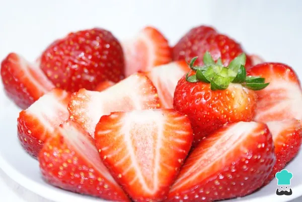
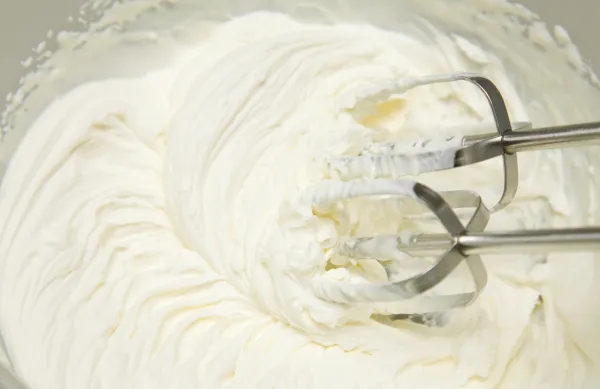
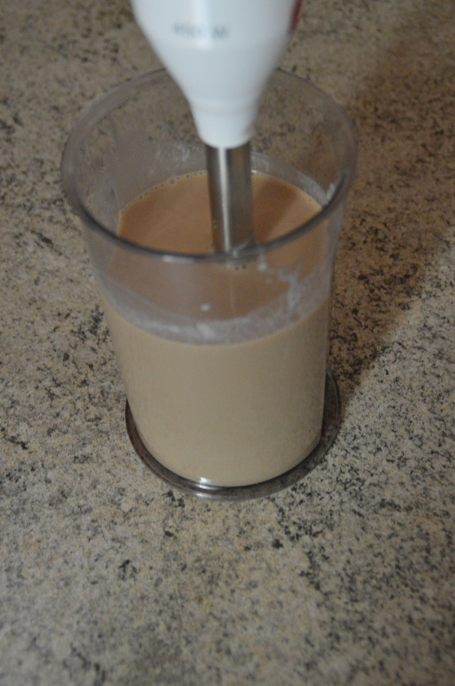
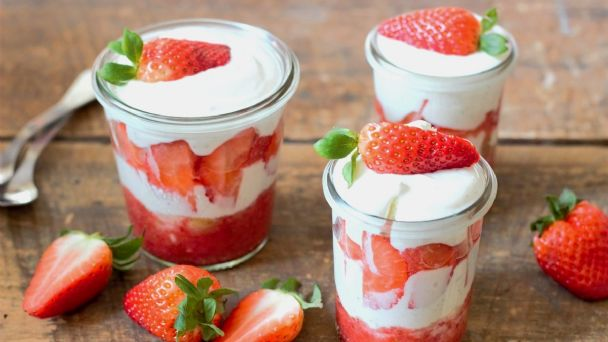

Cortar y lavar las fresas: Hacer un buen plato de fresas con crema es muy fácil. Lo primero que debes hacer es preparar las fresas, lávalas bien y córtalas al gusto. Puedes picarlas por la mitad o si prefieres, dejarlas enteras.
Batir o enfriar crema: Para hacer la crema, coloca la nata bien fría en un molde junto con el azúcar. Utiliza una batidora de varillas y mezcla con movimientos envolventes hasta conseguir que la crema tome una consistencia firme y suave.
Incorporar licor: Si has decidido incluir un poco de licor en la crema, es momento de incorporarlo. Entonces, sin dejar de batir ve añadiendo poco a poco el licor y continua revolviendo hasta que se haya integrado por completo.
Decorar fresas y poner crema: Ya solo te queda servir las fresas y cubrir con la crema. Decora las fresas con crema con unas hojas de menta o algunas chispas de chocolate y disfruta de este delicioso postre cada vez que quieras!
